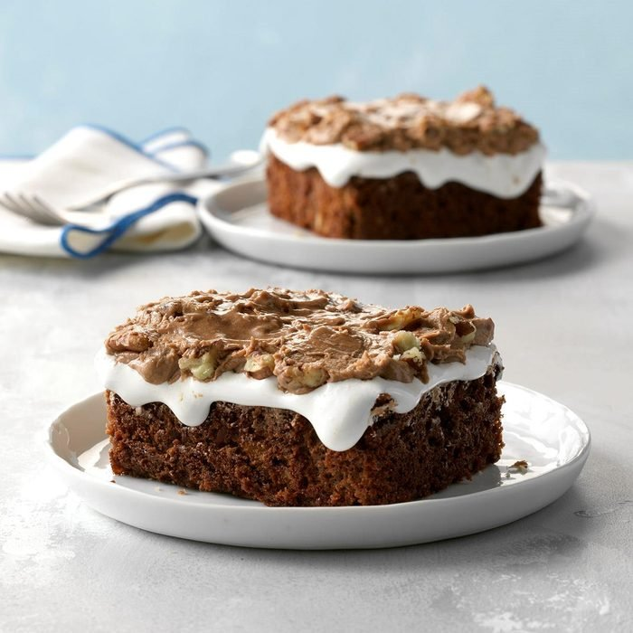

Mississippi Mud Cake
Total time: 55 min Prep: 20 min Bake: 35 min + cooling
With a fudgy brownie-like base topped with marshmallow creme plus a nutty frosting, this dessert will bring your family merriness. Serve with glasses of cold milk or steaming mugs of coffee for an enriching experience!

This recipe involves making use of marshmallow creme to bake a three-layered cake with the first layer being the fudge-brownie base; the second layer is where the marshmallow creme comes in. It is then topped off with a frosting filled with nuts.
Ingredients:
Fudge-Brownie Base
- 1 cup butter, softened
- 2 cups sugar
- 4 large eggs, room temperature
- 1-1/2 cups self-rising flour
- 1/2 cup baking cocoa
- 1 cup chopped pecans
Marshmallow Creme layer
- 1 jar (7 oz) marshmallow creme
Frosting
- 1/2 cup butter, softened
- 3-3/4 cups confectioners' sugar (powdered)
- 3 tablespoons baking cocoa
- 1 tablespoon vanilla extract
- 4-5 tablespoons 2% milk
- 1 cup chopped pecans
Directions
- In a large bowl, mix the butter and sugar for 5-7 minutes until light and fluffy. Add eggs 1 at a time, beating well after each addition. Combine flour and cocoa; gradually add dry mixture to creamed mixture until blended. Fold in the pecans.
- Put the combined mixture in a greased 13x9-in baking pan. Bake in the oven for 35-40 minutes at 350 degrees Fahrenheit.
- Frosting: Mix confectioners' sugar and butter in a small bowl for 5-7 minutes, until light and fluffy. Beat in the cocoa, vanilla and enough milk to achieve frosting consistency. Fold in pecans. Spread over marshmallow creme layer. Store in the refrigerator.
Self-rising flour substitute
As a substitute for 1-1/2 cups self-rising flour, place 2-1/4 teaspoons baking powder and 3/4 teaspoon salt in a measuring cup. Add all-purpose flour to measure 1 cup. Combine with an additional 1/2 cup all-purpose flour.
Nutrition Facts
1 piece: 457 calories, 24g fat (10g saturated), 80mg cholesterol, 270mg sodium, 61g carbohydrate (48g sugar, 2g fiber), 4g protein